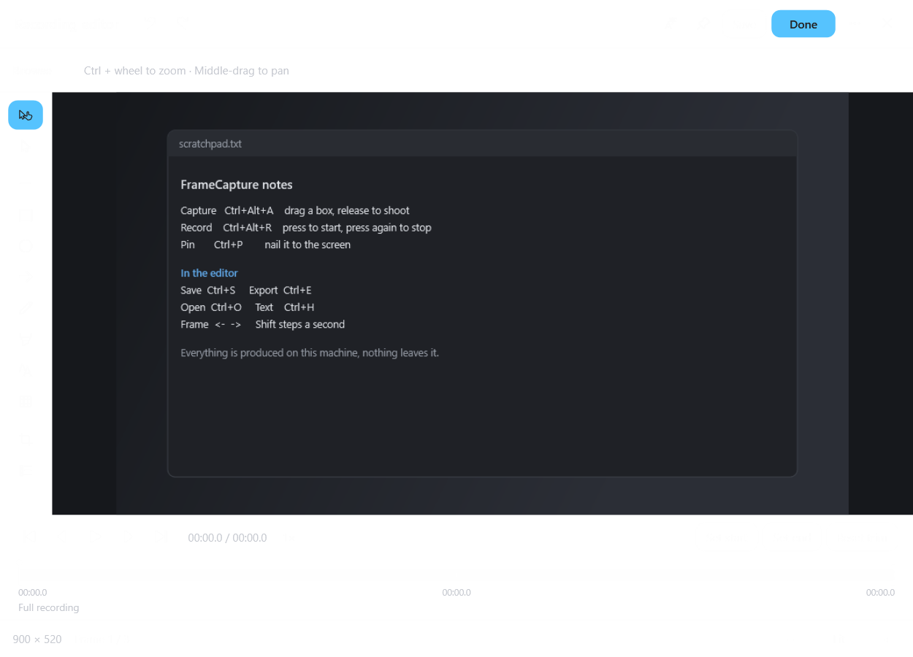
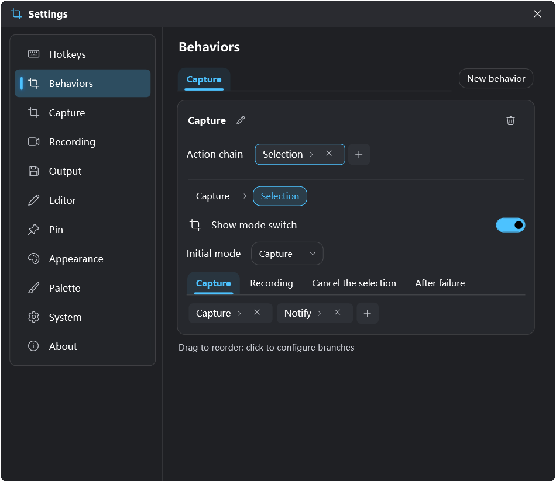
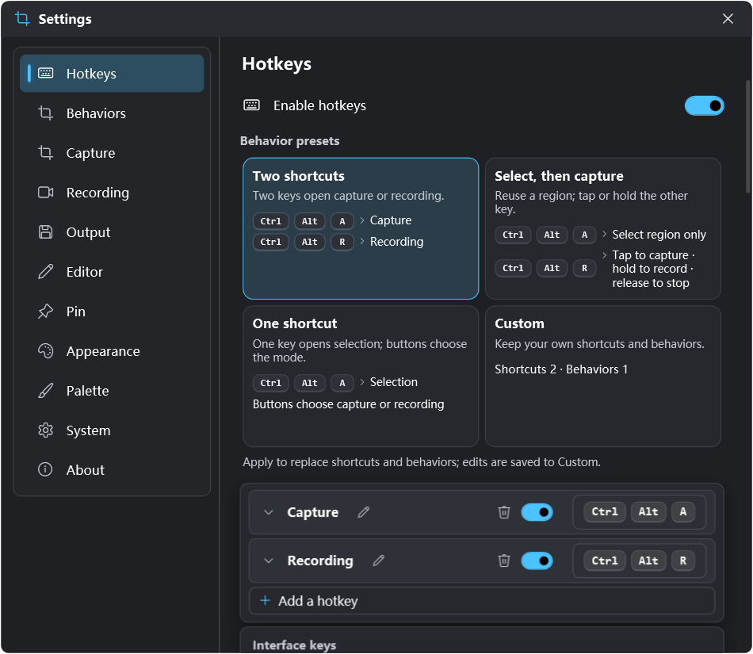
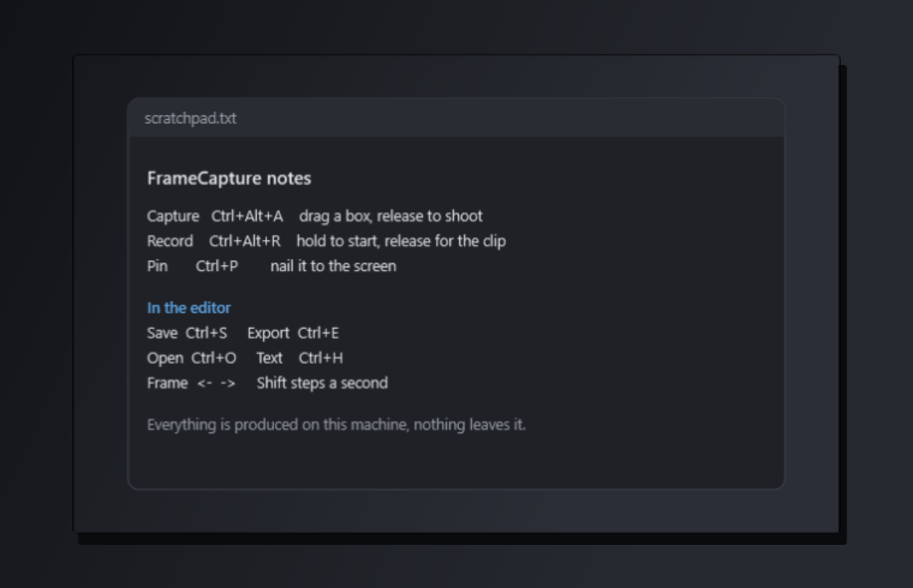

A region. A window. Your choice.
Capture regions, record your screen, or capture a window itself. Set the dwell time for snapping to controls.
MADE FOR YOUR WINDOWS DESKTOP
Screenshots, recording, annotation, and pinned images in one Windows toolkit. A shortcut gets you started. You decide what happens next.

Actual interface · Record & annotate编辑器
MORE THAN A SCREENSHOT
Capture a window or region, add an arrow or a note, then copy, save, or pin it to your desktop. Stay with the task in front of you.
Capture regions, record your screen, or capture a window itself. Set the dwell time for snapping to controls.
Arrows, text, highlights, mosaic, and cropping. Step through recordings and set in/out points to trim the ends.
Copy to the clipboard, save a file, open the editor, or pin an image. Connect the actions you use most.
YOUR SHORTCUTS, YOUR WORKFLOW
Start with a preset and make it yours. Shortcuts enter a shared behavior. The screenshot and recording controls above a selection choose the branch to follow.
Each shortcut enters its initial mode. You can still switch branches while selecting.
Keep selection separate from capture, and use the same region again.
Controls above the selection
Share one entry point, with independent actions for each branch.
FAMILIAR, WITH ROOM TO MAKE IT YOURS
Configure keys and behavior branches in Settings. Start simple, then adjust the details as you go.



Capture and stitch scrolling content, with a preview as you go.
Recognize and copy text locally with Windows OCR.
Pin an image above other windows. Move, zoom, and adjust its opacity.
Windows 10 version 2004 or later, and Windows 11, on x64. The app uses .NET 8 Desktop Runtime. The installer checks for it and downloads it when needed.
It is an optional installer for the FFmpeg video component. Screenshots and GIF export work without it. For MP4 or WebM export, download the component from Recording settings.
Capture, editing, and Windows OCR run locally. Checking for updates, downloading an installer, or installing the video component requires internet access.
Yes. Shortcuts connect to behavior entries. Configure actions for screenshots, recordings, stopping, cancellation, and failure. Editing a preset saves it to your custom scheme.
FRAMECAPTURE FOR WINDOWS
Start with a shortcut. Turn what is on your screen into what you need.